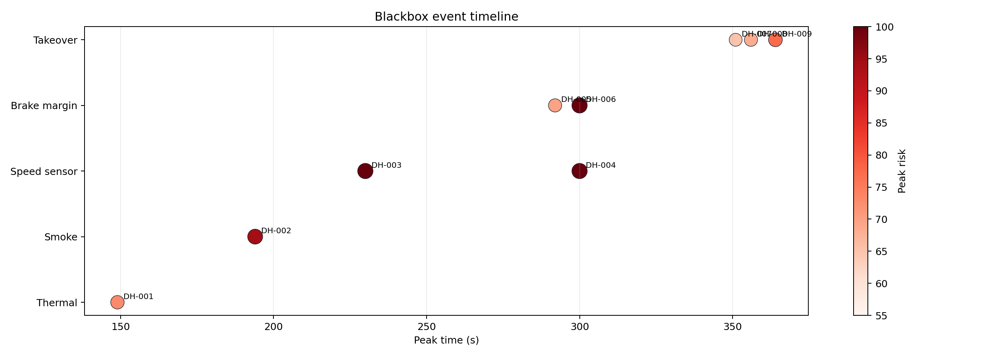
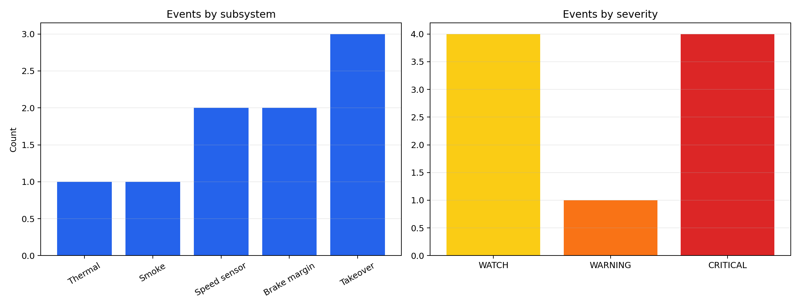
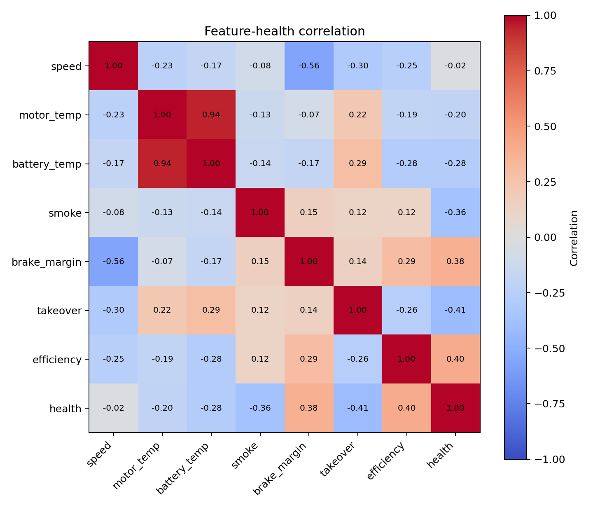

01 System Overview Dashboard

无需 CARLA/AirSim/MuJoCo，基于多源传感器流完成运行安全诊断、事件记录和可视化复盘。
| ID | Subsystem | Severity | Peak Time(s) | Peak Risk | Recommended Action |
|---|---|---|---|---|---|
| DH-003 | Speed sensor | CRITICAL | 230.0 | 100.0 | Cross-check wheel/IMU/GNSS speed and mark sensor unreliable. |
| DH-004 | Speed sensor | CRITICAL | 300.0 | 100.0 | Cross-check wheel/IMU/GNSS speed and mark sensor unreliable. |
| DH-006 | Brake margin | CRITICAL | 300.0 | 100.0 | Increase following distance and prepare emergency braking. |
| DH-002 | Smoke | CRITICAL | 194.0 | 94.42 | Open ventilation, isolate power module, prepare safe stop. |
| DH-009 | Takeover | WARNING | 364.0 | 77.35 | Issue takeover warning and switch to conservative mode. |
| DH-001 | Thermal | WATCH | 149.0 | 73.0 | Reduce speed, enable cooling, inspect battery/motor loop. |
| DH-005 | Brake margin | WATCH | 292.0 | 69.74 | Increase following distance and prepare emergency braking. |
| DH-008 | Takeover | WATCH | 356.0 | 68.3 | Issue takeover warning and switch to conservative mode. |
| DH-007 | Takeover | WATCH | 351.0 | 65.07 | Issue takeover warning and switch to conservative mode. |





